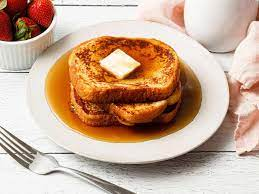

French toast

How to make french toast
It's easier than you think.You just need a skillet, a few staple ingredients, and a good recipe.
Best bread for French Toast
The best breads for French toast are brioche, sourdough, French bread, or challah.
Ingredients
- White bread(6 thick slices bread)
- Eggs(2 large eggs)
- Milk(⅔ cup milk)
- Salt(salt to taste)
- Butter
Steps
- Whisk milk, eggs and salt in a shallow bowl
- Lightly butter a griddle and heat over medium-high heat
- Dunk bread in the egg mixture, soaking both sides. Transfer to the hot skillet and cook until golden, 3 to 4 minutes per side. Serve hot.